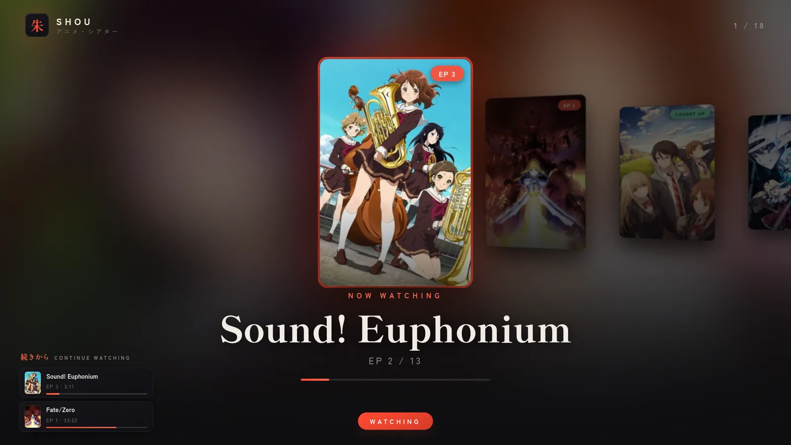
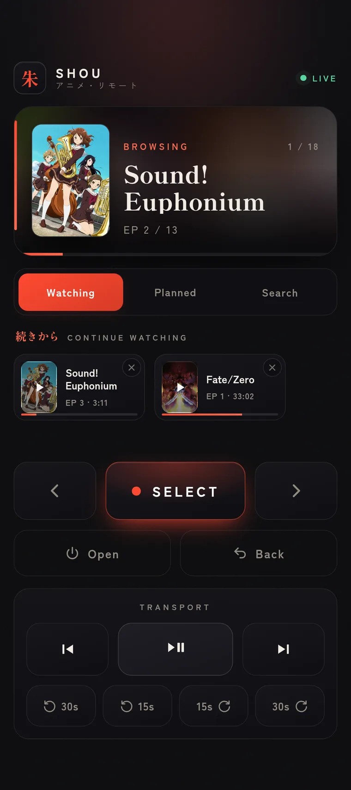
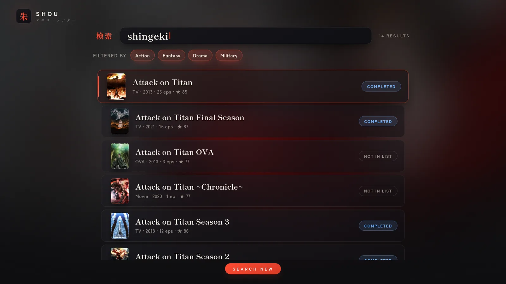
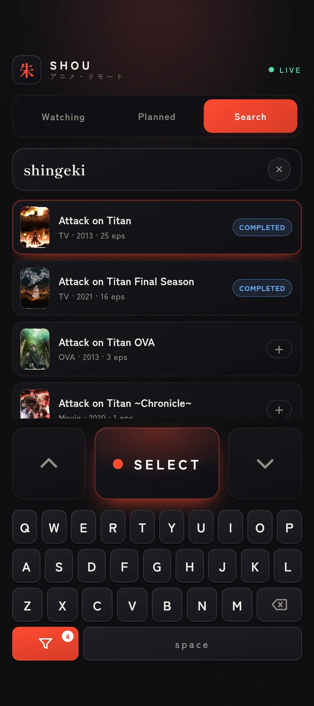
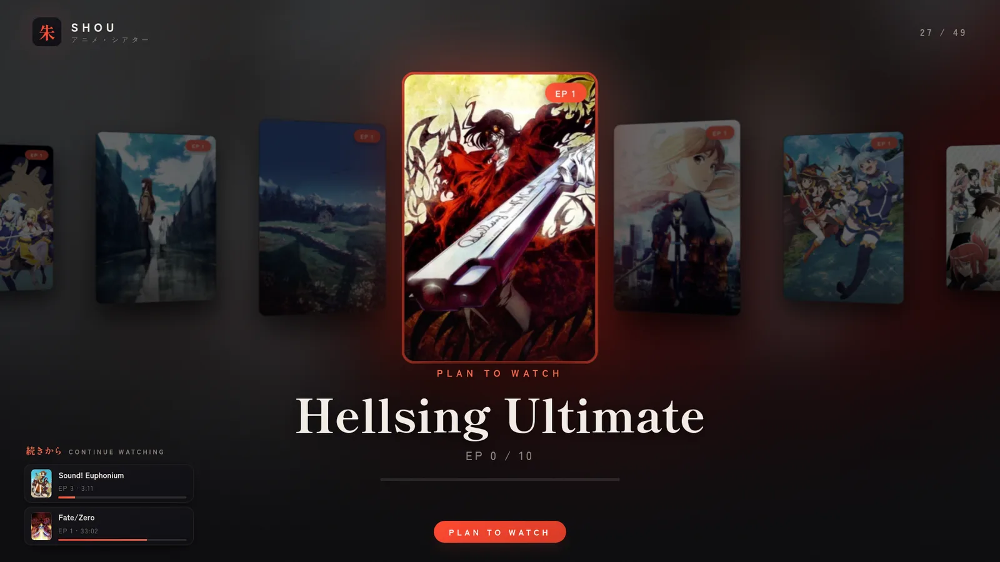
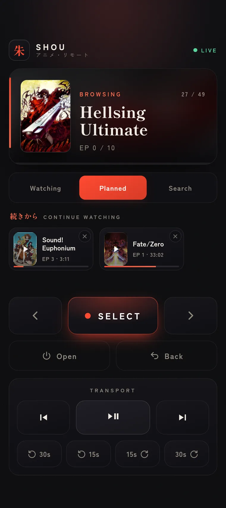
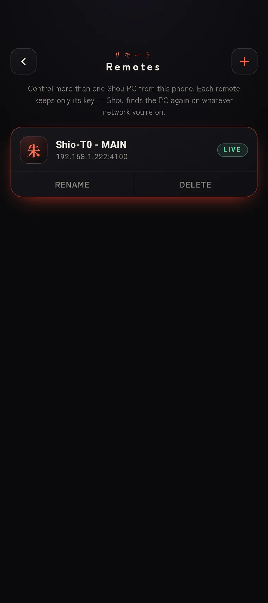

A home-screen widget that actually does something
Now-playing at a glance. Wake the PC, play/pause, skip — without opening anything. A Quick Settings tile, too, for the truly horizontal among us.
アニメ・リモート — anime remote
Watch your anime entirely from your phone. Your AniList lands on the big screen; you browse, play, resume, and rate from a remote in your hand. The couch is the only required peripheral.
Psst — the remote below is real. Press something.
You found the remote. Now lose the keyboard, the mouse, the “where did the trackpad go.” Shou runs on the watching machine and answers to your phone — one tap to play the next episode, a swipe to find the next obsession.
Tap a key on the PC — or the button on the remote — and the very thing you were watching lifts off the big screen and lands in your hand, resuming to the frame. Throw it back and the PC picks up exactly where your phone left off.
Same remote, wrapped in a real app — so it can reach past the browser into the parts of your phone the web can’t touch.
Now-playing at a glance. Wake the PC, play/pause, skip — without opening anything. A Quick Settings tile, too, for the truly horizontal among us.
PC asleep? Tap Wake from the couch. A magic packet goes out; the machine rises. You never get up.
An mDNS scan lists every Shou server on the network. No IP addresses, no typing, no “what was it again.”
Real MediaSession controls on your lock screen and headset. The
volume rocker drives mpv on the PC.
Long-press the icon for Living room or Bedroom — each opens the remote already pointed at that machine.
Tokens live in the Android Keystore via EncryptedSharedPreferences.
Never plaintext, never your problem.
A heads-up when you finish a series, and a nudge when a show you’re on drops a new episode.
You don’t really need to know this. But it’s pretty, so here it is.







<name>.local.# this installer asks before every system change. it has trust issues (the good kind).
$ git clone https://github.com/Shio-T0/Shou
$ cd Shou && ./install.sh
✓ pre-flight distro + compositor detected, refuses to run as root
✓ deps mpv · curl · a browser · uv
✓ python uv sync
✓ config ~/.config/shou/shou.conf · your AniList username
✓ optional ani-cli · libnotify · mDNS · autostart · AniList OAuth
▸ Shou is live. Open the remote on your phone:
http://<hostname>.local:4100/remote?k=<your-private-token>./install.sh — idempotent, distro-aware, asks first.The native Android app — shou-remote-1.3.0.apk,
signed, Obtainium-friendly.
The web remote needs nothing but the URL.
Linux server · Android optional · the web remote works in any browser.